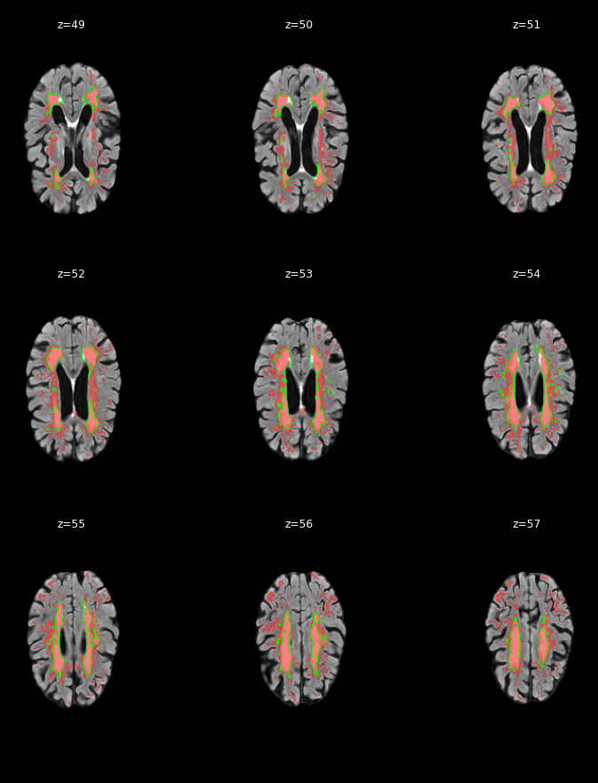

Site: Amsterdam · Voxel volume: 3.516 mm³

| Metric | Value |
|---|---|
| Dice (DSC) | 0.4644 |
| Raw predicted lesion voxels | 35,091 |
| Predicted lesion voxels | 34,347 |
| Reference lesion voxels | 11,169 |
| False-positive voxels | 23,778 |
| False-negative voxels | 600 |
| Predicted lesion clusters | 29 |
| Predicted volume (mm³) | 120,755.8 |
| Reference volume (mm³) | 39,267.5 |
| Predicted/reference volume ratio | 3.0752 |
| Max WMH probability | 0.9972 |
| Prediction threshold | 0.6500 |
Red = predicted WMH (α=0.5). Green outline = ground truth.